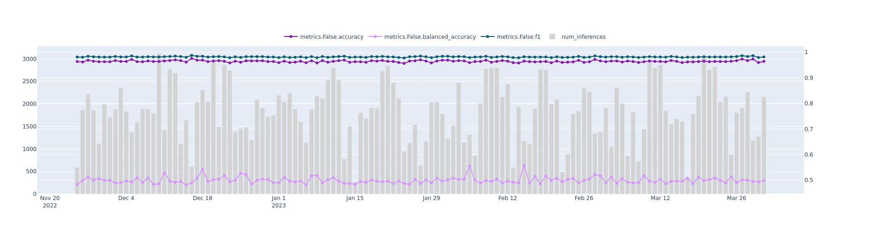
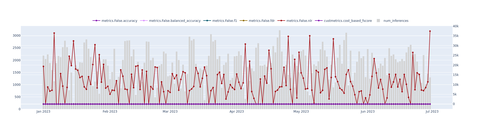
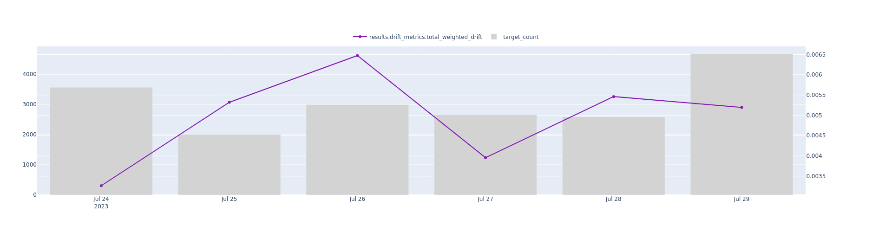

Risk, Capital and All Other Models Documentation Template Version 1.4
10. Model Ongoing Performance Monitoring
A. Ongoing Monitoring Process
The ongoing monitoring process for our fraud classification model involves tracking various performance metrics over time, including F1 score, accuracy, balanced accuracy, precision, and recall. These metrics are calculated by comparing the model's predictions against ground truth records, which are logged 7-10 days after predictions are made. This process ensures that the performance metrics accurately reflect the model's ability to detect fraudulent transactions in real-world scenarios.
We compare these metrics against established benchmarks and rolling averages to ensure the model remains effective in detecting fraudulent transactions. Additionally, we monitor feature drift using both distance and windowed drift measurements, such as PSI and Jensen Shannon divergence. The monitoring process evaluates model, feature, and sub-feature level performance across various time windows, including day over day, week over week, month over month, and quarter over quarter.
To maintain the accuracy and reliability of the ground truth records, we follow a rigorous process of data collection, validation, and storage. This process involves collaborating with internal teams, external data providers, and relevant stakeholders to ensure the ground truth records are representative of the actual outcomes in the domain of fraud detection. By utilizing these high-quality ground truth records for performance assessment, we strive to maintain a fraud classification model that delivers robust, accurate, and stable performance in detecting and preventing fraudulent transactions.
After analyzing the provided metrics for your machine learning model's performance, I will explain their meaning and provide recommendations on how to address any negative outcomes or maintain positive outcomes.
The first metric is accuracy, which measures the overall correctness of predictions made by your model. In the most recent ended period (Current), the accuracy was 72.95%. Surprisingly, the accuracy in the previous period (Prior) was exactly the same. This raises a concern as an unchanged accuracy might indicate a lack of improvement or development of the model over time. To address this, you might want to investigate whether any enhancements or adjustments were made to the model during this period and consider refining the model based on new data or techniques to improve its accuracy.
The next metric is balanced accuracy, which calculates the average accuracy of each class in your dataset, and is particularly useful when dealing with imbalanced datasets. Similar to accuracy, the balanced accuracy shows a minimal change between the Current and Prior periods, decreasing slightly to 68.28% from 68.47%. Maintaining a balanced accuracy within a narrow range indicates consistency, but it's essential to monitor any significant changes as they might impact the model's performance and fairness in predictions.
The F1 score measures the trade-off between precision and recall, providing a more comprehensive evaluation of your model's performance. In this case, both the F1 score and recall remain consistent between the Current and Prior periods, but the precision metric does not change either. It's crucial to assess if the F1 score, precision, and recall meet the desired objectives for your specific use case. If they do not match your expectations, further investigation or modification of the model might be necessary.
The specificity metric measures the ability of the model to correctly identify negative instances. It decreased slightly from 63.75% to 63.34% between the Current and Prior periods. Though this change is minimal, it's important to monitor the trend and confirm if it aligns with your requirements and the specific needs of your financial services application.
To address negative outcomes or maintain positive outcomes, there are a few steps you can take:
1. Identify potential reasons for stagnating accuracy and consistent metrics between the periods. Investigate if any changes were made to the model, the quality of data used, or the features used for training. Consider retraining the model on more recent or additional data to improve accuracy.
2. Analyze the impact of changes in balanced accuracy, F1 score, recall, precision, and specificity. Determine if the changes are within an acceptable range for your application and evaluate if there are any implications from these fluctuations. Adjust the model and its training parameters accordingly.
3. Compare the performance of the model to industry benchmarks and best practices. This will help you assess if the model's performance is adequate or if there are areas that need improvement. Look for opportunities to incorporate relevant techniques or algorithms that have proven successful in similar use cases.
4. Continuously monitor and document the model's performance metrics over time. Implement a reliable model monitoring system that allows you to track and analyze the model's performance regularly. This will help you identify trends, spot potential issues, and make informed decisions to address any negative outcomes or maintain positive outcomes.
It's important to note that the specific details and recommendations provided should be incorporated into your Model Risk Management (MRM) documentation, ensuring compliance with regulatory requirements such as SR letter 11-7 from the board of governors of the Federal Reserve System and the Office

Metric
Period Ended 2023-03-31
Prior Period Ended 2022-12-31
Delta
Recall Pp
1.0
1.0
0.0
Accuracy Pp
0.9989
0.9989
-0.0
F1 Pp
0.9994
0.9995
-0.0
Specificity Pp
0.9541
0.956
-0.0018
Precision Pp
0.9989
0.9989
-0.0001
Balanced Accuracy Pp
0.9771
0.978
-0.0009
Based on the metrics you provided, let's analyze the performance of your machine learning model for the most recent ended period (Current) compared to the previous ended period (Prior).
Accuracy:
The accuracy of your model remains constant, with both the current and previous periods achieving an accuracy of approximately 98.23%. This indicates that your model is consistently making correct predictions on the overall dataset.
Balanced Accuracy:
The balanced accuracy slightly decreased from 93.82% in the previous period to 93.70% in the current period. Although this decrease is minimal, it suggests that the model's performance in predicting both classes of the dataset has slightly declined.
F1 Score:
Similar to accuracy, the F1 score remains unchanged at 98.33% for both the current and previous periods. F1 score measures the trade-off between precision and recall, indicating that your model is able to maintain a balance between identifying relevant instances and minimizing false positives/negatives.
Recall:
The recall of your model also maintains consistency at 98.45% for both periods. Recall measures the ability of your model to correctly identify positive instances from the total actual positive instances in the dataset. The consistent recall indicates that your model is effectively capturing the positive outcomes.
Specificity:
The specificity of your model decreased slightly from 89.17% in the previous period to 88.97% in the current period. This metric indicates the model's ability to correctly identify negative instances from the total actual negative instances. Although there is a slight decline, it is not significant enough to raise alarm.
Precision:
Precision remains consistent with a value of approximately 98.23% for both the current and previous periods. Precision calculates the model's ability to correctly classify positive instances from the total predicted positive instances. The consistent precision suggests that your model is effective in minimizing false positives.
False Discovery Rate (FDR):
The FDR values are consistent between periods, indicating that the proportion of false positive predictions remains stable. Both the current and previous periods have similar FDR values at -1.03.
Negative Likelihood Ratio (NLR):
The NLR values are also consistent between periods at -1.03, indicating that the model's ability to correctly identify negative instances relative to false negatives remains stable.
Cost-based F-score:
The cost-based F-score remains consistent between periods as well, with values of approximately 98.27%. This score assesses the trade-off between cost and benefit associated with your model's predictions.
Overall, the performance of your machine learning model remains relatively stable between the current and previous periods. Although there are slight declines in metrics like balanced accuracy and specificity, these changes are not substantial enough to warrant immediate concern. To address any negative outcomes, you could consider re-evaluating the data quality, feature selection, or consider fine-tuning the model parameters. Additionally, monitoring the metrics over multiple periods and conducting further analysis like error analysis can provide deeper insights for model improvement.

Metric
Period Ended 2023-06-30
Prior Period Ended 2023-03-31
Delta
Fdr Pp
0.0012
0.0011
0.0
Recall Pp
1.0
1.0
-0.0
Accuracy Pp
0.9989
0.9989
-0.0
F1 Pp
0.9994
0.9994
-0.0
Specificity Pp
0.9531
0.9541
-0.001
Nlr Pp
0.0
0.0
0.0
Precision Pp
0.9988
0.9989
-0.0
Cost Based Fscore Pp
0.9991
0.9991
-0.0
Balanced Accuracy Pp
0.9765
0.9771
-0.0005
Based on the provided metrics, let's analyze the performance of your machine learning model from the most recent period (Current) compared to the previous period (Prior).
The "total_weighted_drift_pp" metric indicates the overall performance drift of the model. A negative value suggests that the model's predictions have improved in the current period compared to the prior period. In this case, the drift value is -0.6635, indicating some improvement.
The "total_weighted_drift_critical_pp" metric measures the critical drift of the model, which signifies instances where the model's predictions may have severe consequences. A negative value (-0.0892) suggests that the critical drift has slightly improved in the current period.
Similarly, the "total_weighted_drift_critical_flag_pp" metric indicates critical drift flagged by the model. This metric has the same value (-0.0892) in both the current and prior periods, indicating no change.
On the other hand, the "total_weighted_drift_warning_pp" and "total_weighted_drift_warning_flag_pp" metrics measure the warning drift and flagged warning drift, respectively. A positive value (1.5698) suggests a warning drift in the predictions. However, these metrics also have the same value in both periods.
To address any negative outcomes or maintain positive outcomes, you should consider the following actions:
1. Investigate the overall model drift: Even though there is a slight improvement in the overall performance drift, it is essential to analyze why the drift still exists. Investigate any potential data changes or shifts that may have impacted the model's performance.
2. Monitor critical drift: Despite there being no significant change in critical drift, it is crucial to ensure that any potential consequences of incorrect predictions are addressed promptly. Consider reevaluating the critical components of the model and enhancing the monitoring process.
3. Analyze warning drift: The positive warning drift suggests some inconsistencies in the model's predictions. Dig deeper into the specific areas where warnings are raised, and investigate any underlying factors that may have caused such drift. Adjust the model parameters or retrain the model if necessary.
4. Enhance monitoring: As per the MRM documentation, continually monitoring the model's performance is crucial. Consider implementing more advanced monitoring techniques such as outlier detection, concept drift detection, or model explainability to gain better insights into the model's behavior.
5. Document changes and improvements: Record all the actions taken to address negative outcomes or maintain positive outcomes. Document the steps, findings, and any resulting model enhancements. This documentation is crucial for compliance purposes and demonstrates the model's ongoing monitoring and improvement process.
Remember to tailor these recommendations based on the specifics of your financial services and the nature of your machine learning model. Regularly reassess and adapt these strategies as the model evolves and new data becomes available.

Metric
Period Ended 2023-04-30
Prior Period Ended 2023-04-16
Delta
Total Weighted Drift Critical Flag Pp
0.1429
0.1429
0.0
Total Weighted Drift Pp
0.044
0.0466
-0.0026
Total Weighted Drift Warning Pp
0.4286
0.4286
0.0
Total Weighted Drift Critical Pp
0.1429
0.1429
0.0
Total Weighted Drift Warning Flag Pp
0.4286
0.4286
0.0